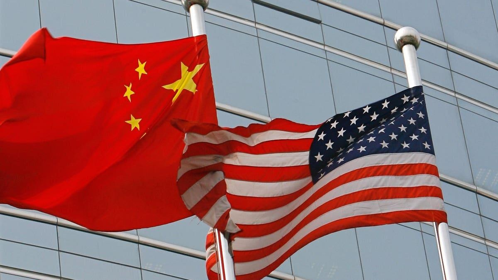

China Jails Elderly U.S. Citizen For Life On Espionage ChargesTopline China on Monday sentenced an elderly U.S. citizen to life in prison on spying charges, the latest in a growing number of foreign nationals and organizations caught up in Beijing’s sweeping anti-espionage crackdown amid souring relations with Washington. Key Facts A court in the eastern Chinese city of Suzhou handed 78-year-old John Shing-Wan Leung a life sentence after convicting him of espionage, the court announced on social media. The court, which said Leung holds a U.S. passport and is a permanent resident of Hong Kong, said Leung was detained by state intelligence officials in Suzhou on April 15, 2021. The court did not provide further details of the charges against Leung. What We Don’t Know Besides his sentence and the scant details on when he was apprehended, little has been made public about the charges levied against Leung, the evidence supporting them or the process by which he was convicted. This is partly standard practice—spying allegations necessarily involve sensitive information that few countries are willing to air publicly—and partly a symptom of China’s opaque, tightly controlled legal system. Given the lack of information, it is not clear whether the incident is related to Leung’s American nationality or will affect U.S.-China relations. Key Background Leung is one of a number of foreign nationals and organizations caught up in Beijing’s widening efforts to manage perceived threats to national security. The broadened anti-espionage laws, which extended China’s already extensive restrictions that dissuade foreign business and academic researchers from working in the country, were brought in as part of President Xi Jinping’s focus on security and placed heightened attention on foreign workers and businesses. According to analysts, the vague provisions included in the laws put businesses on edge and have left it unclear as to what information constitutes a national security issue. Consultancy and due-diligence firms have become a particular focus in recent months and are the subject of a nationwide probe into whether the sector is a tool for foreign espionage. The crackdown comes at a low point for relations between Washington and Beijing, which have soured over allegations of Chinese spy balloons over U.S. territory and China’s position on Russia’s invasion of Ukraine. |
 |